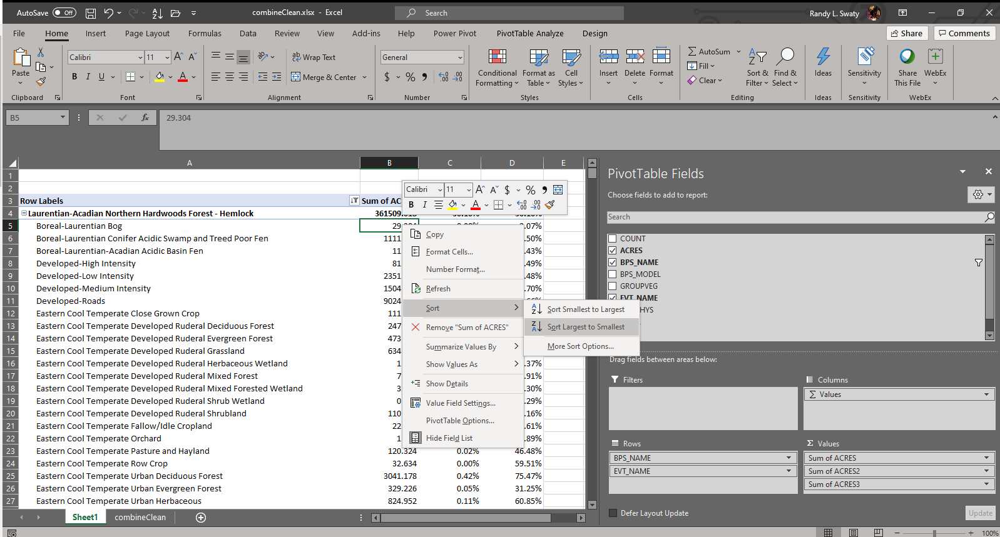
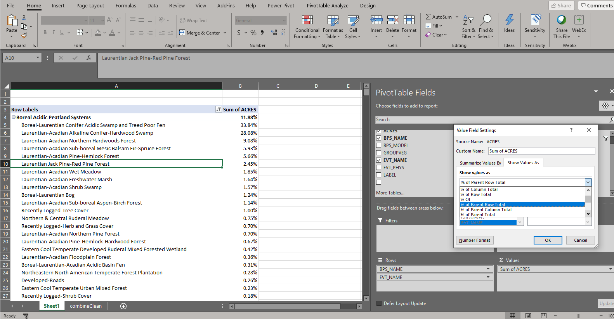

4 Historical Ecosystems
In this chapter we will learn:
- Which ecosystems, and how much of each were on our landscape historically
- How much of each ecosystem has been converted to other land uses (e.g., agriculture)
- How much of each historical ecosystem is mapped as a different ecosystem as of the latest LANDFIRE dataset
4.1 First Question: how many acres (what percent) of each ecosystem were in the area of interest historically?
For the next few questions we will work in a Pivot Table. To get started copy the entire “clean” sheet, click “Insert” at in the Excel ribbon then click “Pivot Table”. Once your pivot table is created you can start to explore.
- In the Pivot Table Fields pane, select BpS Name then acres.
- Right click in the top “Sum of ACRES” field (not the table header), then sort in descending order.
- In our example we have some BpSs that have low ACRES values. We also have categories that are not meaningful, such as “Barren-Rock/Sand/Clay”. We can do a little formatting/cleaning before making a chart:
- To remove BpSs from the table you will click the drop-down menu to the right of “BPS_NAME” in the Pivot Table Fields pane. You can uncheck BpSs as appropriate.
- It is also possible to filter by right clicking on the top value in the list of BpSs, then selecting Filter > Top 10…. Once in that menu you can refine the filtering.
- To get percentages, drag “ACRES” from the top Pivot Table Field pane to the “Values” pane. This will add a second “ACRES” column to the table. Click the drop down in the second instance of “ACRES” (reads “SUM of ACRES2” in our example), then Value Field Settings. In this menu select the “Show Values As” tab, click the “Show Values As” drop down then select “% of Grand Total% to get percentages of each BpS (make sure that”BPS_NAME" is selected as the “Base field”).
- To get a “running total” of percentages you will add a third instance of “ACRES” to the “Values” pane, then Value Field Settings. In this menu select the “Show Values As” tab, click the “Show Values As” drop down then select “% Running Total In” to get running totals of percentages of each BpS (make sure that “BPS_NAME” is selected as the “Base field”).
- Save and keep this pivot table as is for now. We will make a couple modifications in the next section to get at a different question.
Formatted table of BpSs:
We see that the top 4 BpSs comprised ~80% of our example landscape historically. We can visually confirm this and other patterns with a quick chart made in R (though similar charts available in Excel):

4.2 Second question: how much of the historic ecosystems have been converted to a different land use (e.g., agriculture), or have succeeded to a different ecosystem?
If you are new to Pivot Tables this next section will 1) demonstrate their power and 2) showcase ways they can mislead!
Working in the Pivot Table from before (or you can create a new one if you prefer):
- Check the box next to “EVT_NAME” in the Pivot Table Fields pane. Make sure that everything is arranged as in the screenshot below (e.g., “BPS_NAME” is on top of “EVT_NAME” in the “Rows” pane). Note-I am about to sort in descending order.

- Review the results. In the example above we can see that what LANDFIRE mapped as Laurentian-Acadian Forest-Hemlock in the BpS data set has been split into many Existing Vegetation Types. If ordered we get a little more information, but the numbers are misleading. We’d like to see how much of what was Ecosystem X is still Ecosystem X, and how much is now Ecosystem Y, and so on, but the numbers are looking across the whole landscape. They need to be recalculated so we get the percentage of EVT per BpS.
- To reconfigure the Pivot Table:
- Drag the “Sum of ACRES2” and “Sum of ACRES3” field from the “Values” pane up to the Pivot Table Fields to remove it.
- Click the “Sum of ACRES” item in the “Values” pane to access the Value field settings.
- Click on the “Show Values As” tab, then select “% of Parent Row Total” in the “Show Values As” drop down.
Here’s a screenshot of making that selection:

You’ll see that ~34% of what was classified as “Boreal Acidic Peatland Systems” in the BpS dataset for our landscape is now classified as “Boreal-Laurentian Conifer Acidic Swamp and Treed Poor Fen” in the Existing Vegetation Type dataset. Scroll through the table below to explore the resulting data. The table has been exported from the Pivot Table and cleaned up a bit for viewing.
Note: I filtered for the Top 10 EVTs per BpS.
Looking at the Laurentian-Acadian Northern Hardwoods Forest - Hemlock for our landscape we note a few things:
- Most of what was mapped as this type historically in the BpS dataset is still mapped as that type
- Cumulatively about 6% of this type is now roads and recently logged types.
- The other EVTs mapped are not terribly “off-site” (e.g., something like “Plantation”).
4.3 The fine print
While this assessment is illustrative, it is important to note that the methods used to create the BpS and EVT datasets are substantially different, and LANDFIRE datasets are not made for assessing small areas. Please review.